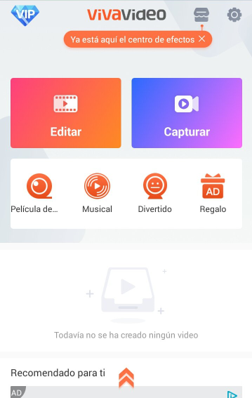

Después de descargar la aplicación la iniciamos y nos saldrá esta pantalla en la cual las principales opciones son para editar un vídeo (botón naranja) o para hacer un vídeo a partir de fotos (botón azul-morado).
Es una aplicación muy fácil de usar ya que contiene muchas opciones para editar como puede ser insertar música, elegir el tema de tu vídeo, la duración del vídeo o la velocidad, cambiar el sentido del vídeo, etc.
Por si no te aclaras, la misma aplicacion te hace un pequeño tutorial al instalarla en el cual te explica más o menos como funciona cada opción que elijas.